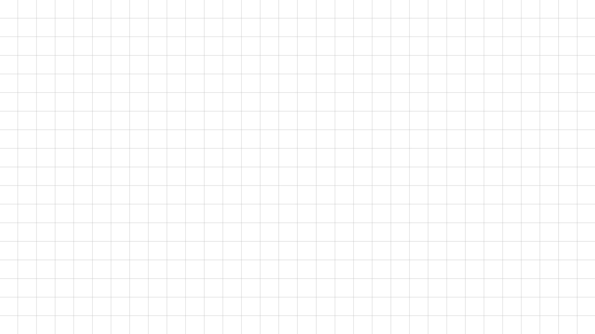

I am currently a graduating student pursuing Bachelor of Science in Computer Science
in the University of the Philippines Los Baños. An experienced designer shaped by
my past works and artistic pursuits, I strive to merge creativity with technical expertise
in everything I do. With a growing passion for innovation and problem‑solving,
I aim to create meaningful projects that leave a lasting impact.
Hanna Julia L.
Macasarte

Building, designing, and learning — one piece at a time.
Here are the projects that shaped my journey.
KitaCred
KitaCred is designed to expand credit access for high-potential unbanked market segments through intelligent, data-driven evaluation. My role focused on leading the creation of the interactive Canva prototype for BPI, where I headed the design process to translate complex financial assessment workflows into a clear, user-friendly interface. This prototype served as a critical bridge between technical innovation and practical usability, ensuring that stakeholders could visualize and engage with the platform’s potential impact.
REGICS
The Registration and Enrollment Gateway of ICS or REGICS is a comprehensive academic management system. It serves as a centralized digital platform that streamlines and automates student registration and enrollment, transforming processes into an efficient, user-friendly digital experience. As part of our CMSC 22 project, I contributed to the system’s development by helping design and implement core features that emphasized usability and scalability, ensuring it could serve as a practical solution for academic administration.
Ang Bayan Ko
Created for my organization, the Graphic Literature Guild, Ang Bayan Ko is a comic that illustrates the current sociopolitical situation in the Philippines. Through visual storytelling, I explored themes of inequality and the enduring struggles of the Filipino people, with the hope of someday turning the tatsulok — the social hierarchy — upside down, placing the mamamayan (the people) at the top. This work reflects both my artistic pursuit and my commitment to using design as a medium for social commentary.